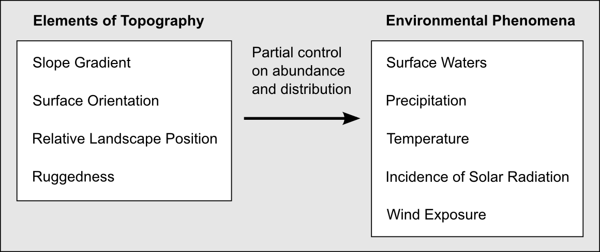
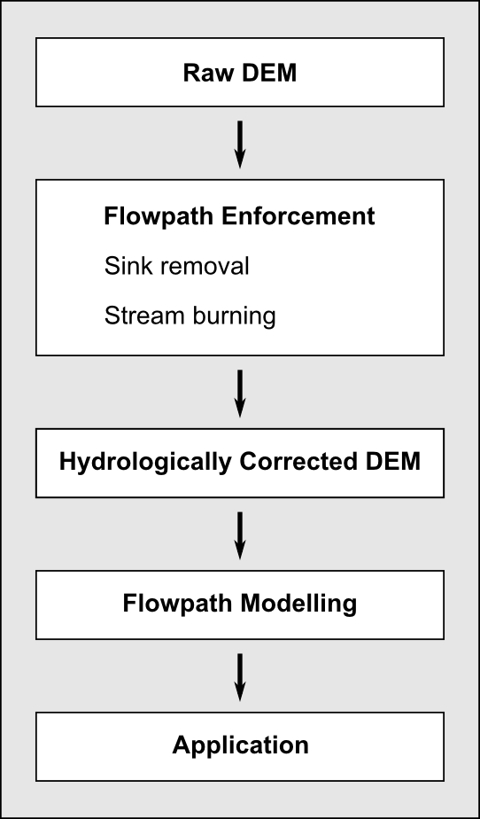
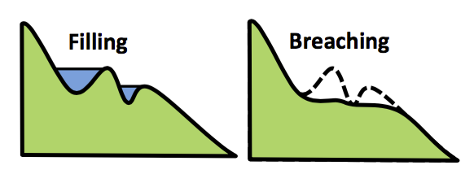

Press 'o' to toggle the slide overview and 'f' for full-screen mode.
Choose the theme in which to view this presentation:
Black -
White -
League -
Sky -
Beige -
Simple
Serif -
Blood -
Night -
Moon -
Solarized
Copyright © John Lindsay, 2015
DEM-Based Flowpath Enforcement
GEOG*6100 Guest Research Talk
John LindsayThe University of Guelph
What is my approach to research?
- I adopt the
constructive research approach in my own work (Kasanen et al. 1993). - Characterized by
producing and evaluating innovative constructions or artifacts, intended tosolve real world problems and to make a contribution to the theory of the discipline in which it is applied. - Implies a close involvement between the
researcher and practitioners
Kasanen, E. , Lukka, K. and Siitonen, A. (1993). The constructive approach in management
accounting research. Journal of Management Accounting Research, 5(fall), 241–64.
From Lukka (2003):
- The construction is a model, organizational structure, computer algorithm, etc. and
is invented and developed, not discovered . Experiments are used to test the practical applicability of the construction.- By developing a construction, reality changes:
- The researcher’s
empirical intervention is explicit and strong. - This is in contrast to the typical objective of conducting research with minimal empirical obtrusion.
- The researcher’s
Lukka, K. (2003). The constructive research approach.
Case study research in logistics. Publications of the Turku School of Economics and Business
Administration, Series B, 83-101.
- By using a constructive research approach in my own work, I can be assured that
my research is
innovative and has the potential to directlyimpact practice . - In addition to traditional academic research outputs,
I must
disseminate constructions . This can be a large component of the work and a major investment in resources. - I must always be actively engaged in a dialog with practitioners in my field while also having a foot in developments in the academic discipline.
What do I research?
- My research is in the field of
geomorphometry - Area of geomatics concerned with extracting information from digital topographic data (DEMs)
- To model or gain understanding landscape processes
Why is topography important?
What do I research?
- My interests lie in
assessing uncertainty in the methods of geomorphometry and indeveloping and testing new geomorphometric techniques . - I am also interested in how the field has been affected by the recent
availability of fine-resolution DEM data and global data sets and thedemocratization of geomorphometry in practice . - Much of my research focusses on applications of geomorphometry to model hydrological processes.
DEMs are used to model surface drainage
- Surface flowpath information is used to:
- Delineate watersheds and sub-basins
- Identify contributing areas
- Model runoff, flood inundation, sediment transport, erosion sources, and contaminant migration
- Map stream networks and analyze their topology
The spatial hydrology workflow
- I'll briefly present a recent study focused on the flow enforcement step:
- Lindsay JB. 2015. Efficient hybrid breaching-filling
sink removal methods for flow path enforcement in digital elevation models. Hydrological Processes. DOI: 10.1002/hyp.10648
- Lindsay JB. 2015. Efficient hybrid breaching-filling
Sink removal
- If a DEM hasn't been processed using
flow-path enforcement techniques, it will containsinks - sinks = topographic depressions and flats
- Sinks are caused by a range of errors and natural causes
Sinks must be removed in hydrological applications

The impact of sink removal
- In modifying a DEM to enforce flow through sinks, it is desirable to make
minimal alterations to the source data . - Academics have been telling practitioners for years that
depression filling impacts DEMs far more than breaching and hybrid methods - Rieger 1998; Martz & Garbrecht 1999; Soille 2004; Lindsay & Creed 2005; Lindsay & Dhun 2015.
Why do practitioners fill depressions?
- Depression filling algorithms were
developed first . - Filling tools are
available in nearly every GIS. - All filling algorithms result in the same solution. The focus of developing new algorithms
has been creating
more efficient filling methods- Jenson & Domingue 1988; Planchon & Darboux 2002; Wang & Liu 2006; Wallis et al. 2009; Barnes et al. 2014; Yu et al. 2014
Can a breaching method be devised to encourage adoption by practitioners?
- Breaching methods are less efficient and are largely unavailable as tools in common GIS software.
- An ideal breaching method would have
similar efficiency to modern filling methods .- Flow enforcement is the first step in the workflow and practitioners don't want to have to spend hours or days processing.
Can a breaching method be devised to encourage adoption by practitioners?
- It must be able to
handle massive DEMs ; robustness is very important. - It should handle
special cases where breaching is the wrong choice for handling individual sinks. - The tool should be implemented in a way that it can be
readily integrated into GIS .
Efficient breaching-based flow enforcement
- The highly efficient
priority-flood algorithm was used to visit DEM cells in the flood order.

Efficient breaching-based flow enforcement
- As new cells are flooded, we keep track of the neighbour from which the flood wave propagated.
- When a depression is located, we attempt to create a breach channel to connect it with the edge.
- If the required breach channel is too deep or too long the sink is filled in a subsequent step.
- The new method is best characterized as a breach-first/fill-second hybrid flow enforcement algorithm.
Evaluation of the new method
- Each of the test DEMs were processed using the new algorithm in complete breaching (B), selective breaching (SB), and constrained breaching (CB) modes.
- Tests were run on a 3.0-GHz 8-core Intel processor computer system with 64 GB of 1866-MHz DDR3 memory.
- The performance of the method was compared against the Wang and Liu (2006) depression filling algorithm.
- Efforts were made to minimize the implementation differences between the filling and breaching methods.

The two largest DEMs had nearly 1 billion grid cells and were 3.5 GB in size.
Conclusions
- While breaching based and hybrid sink removal methods have been demonstrated to reduce
impacts compared with depression filling, performance and robustness issues and the lack
of availability have
limited their use . - This work has demonstrated that
shortcomings of existing breaching/hybrid methods is
not inherent in the approach to sink removal and that the issues affecting the widespread application of the approach in common practice can be resolved.
Conclusions
- Operating in B and SB modes, the new algorithm was found to
offer similar performance to the Wang and Liu (2006) filling algorithm. In SB mode, the new algorithm was approximately 8% slower. - The CB mode was found to be most strongly affected by the use of a maximum breach channel length parameter.
- The new algorithm was
capable of processing massive DEMs of widely varying spatial resolution and extent.
Acknowledgements
- This work was partially funded through a grant provided by the Natural Sciences and Engineering Research Council of Canada.
- Questions?